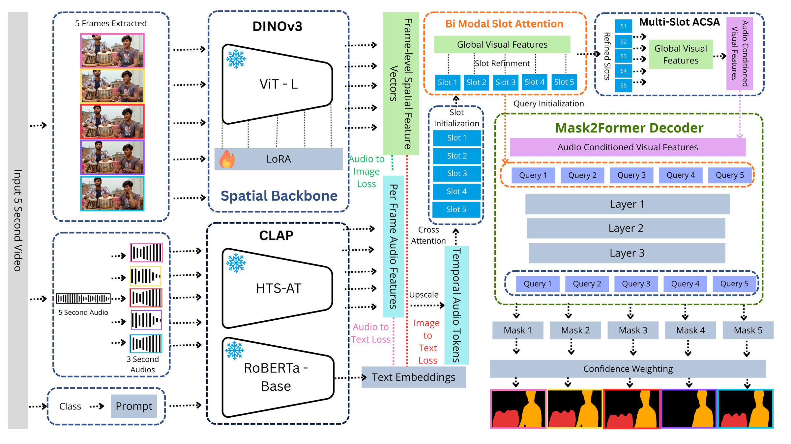

Audio-Visual Segmentation (AVS) requires predicting pixel-wise masks of sounding objects by grounding acoustic signals in visual space. In multi-source scenes, concurrent sound sources often remain entangled within shared visual representations, leading to merged masks or unstable specialization when using standard alignment-focused transformer architectures. To address this, we present SlotAVS, an object-centric framework driven by competitive bi-modal slot attention. While robust foundation models provide rich semantic priors, SlotAVS shifts the paradigm from global cross-modal fusion to explicit competitive binding. By initializing discrete object slots from temporal audio sequences and enforcing strict slot-wise competition over spatial visual tokens, our method structurally mitigates the blending of distinct acoustic entities. Further, to stabilize instance-level learning, we introduce a Hungarian matching strategy that optimally aligns slots with ground-truth objects using spatial and boundary overlap. Coupled with a numerically stable, confidence-aware mask fusion mechanism, SlotAVS robustly aggregates multi-source predictions. Extensive experiments on the AVSBench dataset demonstrate the efficacy of our approach, achieving 88.6% mIoU on the Single Source (S4) split and 71.7% mIoU on the Multi-Source (MS3) split. These results show that explicit competitive binding is critical for complex audio-visual scene understanding and effectively leveraging foundation-model priors without relying solely on their capacity. The code and pretrained models are publicly available at: https://github.com/Arnav-Sharmaa/SlotAVS.

Demonstration of SlotAVS performing multi-source audio-visual segmentation on complex scenes with concurrent sound-producing entities.
Quantitative comparison on Single Source (S4) and Multi-Source (MS3) splits of AVSBench. MJ and MF denote region similarity (mIoU) and contour accuracy (F-score), respectively. Baseline methods are sorted by MS3 MJ.
| Model | Backbone | Size | Single Source (S4) | Multi-Source (MS3) | AVSS MJ1 |
||
|---|---|---|---|---|---|---|---|
| MJ | MF | MJ | MF | ||||
| AV-SAM | ViT-H | 1024 | 40.5 | 0.566 | — | — | — |
| SAM | ViT-H | 1024 | 55.1 | 0.739 | 54.0 | 0.638 | — |
| AVSBench | PVT-v2 | 224 | 78.7 | 0.879 | 54.0 | 0.645 | 29.7 |
| ECMVAE | PVT-v2 | 224 | 81.7 | 0.901 | 57.8 | 0.708 | — |
| DiffusionAVS | PVT-v2 | 224 | 81.4 | 0.902 | 58.2 | 0.709 | — |
| AVSegFormer | PVT-v2 | 224 | 82.1 | 0.899 | 58.4 | 0.693 | 36.7 |
| BAVS | PVT-v2 | 224 | 82.0 | 0.886 | 58.6 | 0.655 | 32.6 |
| CATR | PVT-v2 | 224 | 81.4 | 0.896 | 59.0 | 0.700 | — |
| COMBO | PVT-v2 | 224 | 84.7 | 0.919 | 59.2 | 0.712 | 42.1 |
| UFE-AVS | PVT-v2 | 224 | 83.2 | 0.904 | 59.5 | 0.676 | — |
| QDFormer | Swin-T | 224 | 79.5 | 0.882 | 61.9 | 0.661 | — |
| GAVS | ViT-B | 1024 | 80.1 | 0.902 | 63.7 | 0.774 | — |
| SAMA-AVS | ViT-H | 1024 | 83.2 | 0.901 | 66.9 | 0.754 | — |
| AVSStone | Swin-B | 224 | 83.2 | 0.913 | 67.3 | 0.776 | 48.5 |
| CAVP | PVT-v2 | 224 | 87.3 | 0.936 | 67.3 | 0.781 | 48.6 |
| VCT | Swin-B | 384 | 86.2 | 0.934 | 67.6 | 0.814 | 51.2 |
| TAViS | ViT-L | 224 | 84.8 | 0.912 | 68.2 | 0.759 | 44.2 |
| TAViS | ViT-L | 1024 | 87.0 | 0.926 | 71.2 | 0.796 | — |
| SlotAVS (Ours) | ViT-L | 224 | 84.5 | 0.904 | 64.4 | 0.765 | 45.6 |
| SlotAVS (Ours) | ViT-L | 512 | 87.1 | 0.923 | 71.4 | 0.811 | 65.47 |
| SlotAVS (Ours) | ViT-L | 1024 | 88.6 | 0.935 | 71.7 | 0.815 | 69.99 |
Please cite our work as follows:
@inproceedings{sharma2026slotavs,
author = {Sharma, Arnav and
Mishra, Anand and
Rameshan, Renu},
title = {SlotAVS: Object-Centric Audio-Visual Segmentation via Bi-Modal Slot Attention},
booktitle = {British Machine Vision Conference (BMVC)},
year = {2026}
}
The authors gratefully acknowledge Vehant Technologies Pvt. Ltd. for supporting this work.